Quarseg
2.1
13/3/15
Descripción:
Compuesto por:
- Zeolides 2.2.0
- Persona 1.0.3
- Estructura y composición 1.2.0
- Ayuda 3.0
Desarrollado por:
El Sistema de Gestión Integral de Seguridad: es el responsable de garantizar los procesos de autenticación, autorización y auditorías de manera horizontal a los subsistemas que son desarrollados sobre la plataforma de software y de igual forma, mediante la implementación de WSS (Web Services Security) ofrece sus servicios a otras plataformas o sistemas externos que lo requieran.
A continuación se muestra un esquema lógico donde se presentan las principales funcionalidades que brinda:
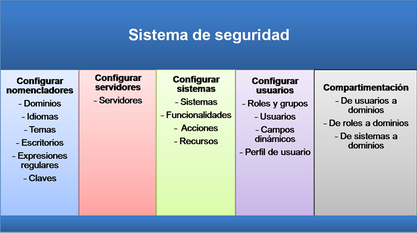
Figura 1. Vista lógica del Sistema de Gestión Integral de Seguridad.
• Implementación del estándar SAML (Security Assertion Markup Language, por sus siglas en inglés): La implementación del estándar internacional SAML V 2.0 hace que el sistema sea capaz de integrarse con múltiples plataformas o sistemas que de igual forma lo adopten.
• Implementación del estándar RBAC (Role Based Access Control, por sus siglas en inglés): La implementación del estándar internacional RBAC garantiza la implementación de políticas de control de acceso basadas en roles, las cuales permiten la creación de roles, asignación de privilegios y permisos y herencia de roles entre otros, logrando un esquema seguro en el diseño y flexible en su implementación.
• Integración con servidores OpenLdap y Directorios activos: La configuración de diferentes servidores de autenticación le brinda la posibilidad de usar las cuentas de usuarios que se encuentran alojados en ellos permitiendo así el acceso a los sistemas sin la necesidad de crear nuevas cuentas. De igual forma las políticas de cambio de contraseñas y restricciones de las claves de acceso serán las establecidas en los directorios activos.
• Integración a nivel de servicios web: Mediante la implementación de WSS (Web Services Security) garantiza que otras plataformas consuman los servicios de autenticación, autorización y auditorías de manera segura.
• Seguridad horizontal a la plataforma de desarrollo: Permite a los desarrolladores concentrarse específicamente en el negocio que desarrollan, ya que los procesos de Autenticación, Autorización y Auditorías se garantizan de forma horizontal por el sistema de seguridad.
• Gestión de claves de acceso: Permite al administrador configurar de manera dinámica la fortaleza de las claves de acceso de los usuarios (números, letras, signos ó la combinación de ellos), así como el período de caducidad (tiempo en que una clave puede ser usada), el historial de contraseñas (cantidad de veces de cambio de claves que deben pasar desde la última vez que se usó una clave determinada para poder ser usada nuevamente) y el mínimo de caracteres que puedan tener.
• Gestión de acceso basado en direcciones IP: Le garantiza a los administradores definir restricciones de acceso mediante el establecimiento de reglas de acceso por direcciones IP, restringiendo que los usuarios del sistema solo puedan acceder a las diferentes aplicaciones desde el lugar que les fue concedido.
• Entorno multi-entidad: Mediante la interacción con el Sistema de Caracterización de Objetos y Entidades garantiza que el sistema sea desplegado en un escenario multi-entidad. Para ello se apoya en la creación de dominios estructurales los cuales serán asignados posteriormente a los usuarios del sistema, de manera que aunque toda la información se encuentre desplegada en un servidor central, sólo una porción de la misma podrá ser consultada en dependencia del dominio y el nivel de acceso a dichas estructuras que posean los usuarios.
• Gestión de metadatos de usuarios: Mediante la implementación del patrón EAV (Entity Attribute Value, por sus siglas en inglés) se garantiza la definición de nuevos atributos a los usuarios mediante la creación de campos dinámicos, posibilitando agregar a los mismos información adicional en dependencia de los objetivos que se persigan.
• Compartimentación de la información basada en dominios de seguridad: Independientemente de los niveles de acceso que tengan los administradores en el sistema, garantiza además que la información que en él se gestiona solo pueda ser consultada por los diferentes administradores en dependencia del dominio en que se encuentren.
Configuración de subsistemas
Esta funcionalidad permitirá gestionar la estructura de los sistemas a los cuales se les brindará los servicios de seguridad. Posibilita adicionar, modificar, eliminar, importar y exportar un sistema, así como gestionar las funcionalidades, las acciones y los recursos deseados. Se accede a través de la opción Inicio/Seguridad/Configuración de subsistema.
Gestionar subsistemas
Para la gestión de un sistema seguir los pasos siguientes:
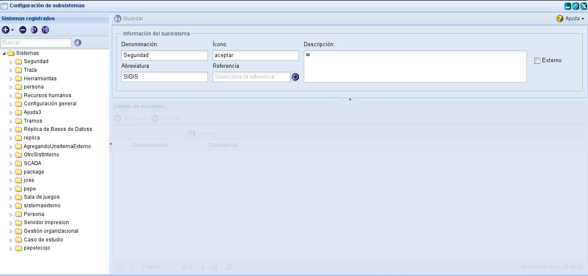
Figura 2. Interfaz configuración de subsistemas.
- Adicionar un sistema. Se puede acceder a esta funcionalidad con las teclas (Alt + I +S).
- Modificar un sistema previamente seleccionado, se muestra la interfaz con los datos del mismo. Luego de realizar los cambios presionar el botón Guardar.
-
Eliminar un sistema previamente seleccionado en el árbol, el sistema siempre mostrará un mensaje de confirmación de la acción que puede aceptar o no según convenga, ver Figura 3. Se puede realizar esta operación seleccionando el sistema en el árbol y oprimiendo la tecla (DEL).
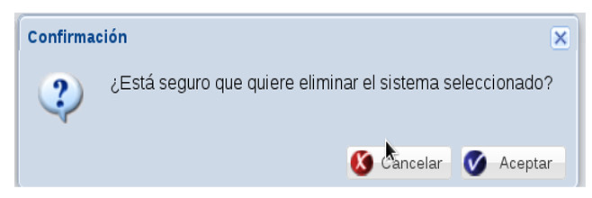
Figura 3. Mensaje de confirmación. - Exportar la configuración de un sistema en formato xml. Se puede acceder a esta funcionalidad con las teclas (Alt+E). Ver índice exportar sistema. Se puede acceder a esta funcionalidad con las teclas (Alt+E).
- Importar la configuración completa de un sistema a partir de un xml. Se puede acceder a esta funcionalidad con las teclas (Ctrl+Alt+I). Ver índice importar sistema.
Adicionar subsistema
Para adicionar un subsistema se accede a la interfaz Configuración de subsistemas, ver Figura 2 y se selecciona el subsistema dentro del cual se quiere crear el nuevo subsistema, luego se selecciona la opción Adicionar subsistema a la cual se accede tras presionar el botón. Este se ubica en el menú de opciones que aparece a la izquierda de la interfaz sobre el listado de sistemas, ver Figura 3. También se puede adicionar un subsistema presionando clic derecho sobre el subsistema dentro del que se desee adicionar otro y seleccionando la opción Adicionar subsistema, ver Figura 4.
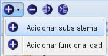
Figura 3. Adicionar subsistema desde el menú de opciones.
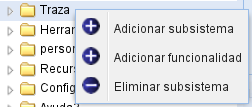
Figura 4. Adicionar subsistema (clic derecho).
Producida la acción anterior se actualiza el panel de la derecha mostrándose los campos necesarios para insertar un subsistema, ver Figura 5.
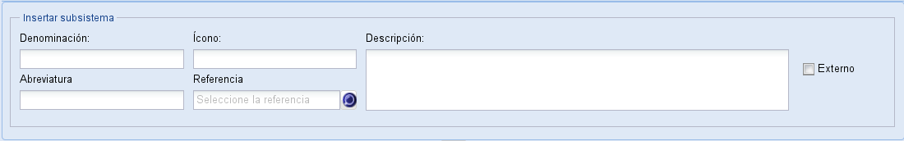
Figura 5. Adicionar subsistema.
Las opciones de la figura anterior permiten:
-
Insertar la denominación del sistema. Este campo admite que se introduzcan solo caracteres alfanuméricos y los caracteres especiales (-_), en caso contrario el sistema mostrará un mensaje de error.
-
Insertar la abreviatura. Este campo admite que se introduzcan solo caracteres alfanuméricos, en caso contrario el sistema mostrará un mensaje de error.
-
Insertar el ícono. Este campo admite que se introduzcan solo caracteres alfanuméricos, en caso contrario el sistema mostrará un mensaje de error.
-
Insertar la referencia. En este campo se permitirá seleccionar dentro de qué subsistema de los que se encuentran en el árbol de referencias, ver Figura 6 se va a adicionar el nuevo subsistema, o especificar la referencia al servidor web en caso de que se trate de un subsistema externo.
-
Insertar la descripción del sistema.
-
Especificar si el sistema será externo o no. En caso de ser externo debe insertar el servidor web.
-
Guardar los datos de la interfaz permitiendo adicionar otro subsistema, para esto se presiona el botón Guardar.
-
Adicionar el subsistema al árbol de subsistemas.
En caso que no se presione el botón Guardar, al realizar cualquier acción sobre el árbol de subsistemas se muestra el mensaje de confirmación: “Existen datos sin guardar, ¿desea continuar?”, si se selecciona la opción Aceptar, se continúa el procedimiento y no se guardan los cambios de lo contrario se mantiene en la interfaz los datos que se hayan insertado.

Figura 6. Árbol de referencias.
Eliminar subsistema
Para eliminar un subsistema se accede a la interfaz Configuración de subsistemas, ver Figura 2 y se selecciona el subsistema que se quiere eliminar, producida esta acción se presiona el botón o se presiona clic derecho sobre el subsistema que se desee eliminar y se selecciona la opción: Eliminar subsistema. A continuación se muestra el mensaje de confirmación: “¿Está seguro que quiere eliminar el subsistema seleccionado?”, en caso afirmativo se actualiza el listado de subsistemas y se muestra el mensaje informativo: “El subsistema ha sido eliminado satisfactoriamente.”
Exportar subsistema
Esta opción permite exportar un subsistema en formato XML. Para realizar esta opción se accede a la interfaz Configuración de subsistemas, ver Figura 2 y se selecciona el subsistema que se quiere exportar, producida esta acción se presiona el botón del menú de opciones. A continuación se abre una ventana del navegador para seleccionar el directorio donde se ubicará el subsistema al ser exportado, ver Figura 7.

Figura 7. Interfaz Exportar sistema.
Importar subsistema
Para importar un subsistema se accede a la interfaz Configuración de subsistemas, ver Figura 2 y se presiona el botón . A continuación se abre un formulario para seleccionar el directorio donde se encuentra el XML con los datos del subsistema que se desea importar, ver Figura 8.
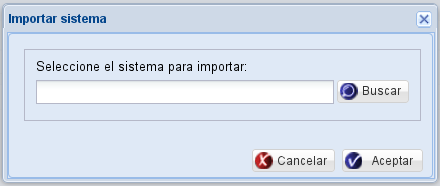
Figura 8. Interfaz Importar sistema.
Producida la acción anterior se pueden realizar una de las siguientes acciones:
- Buscar la dirección en la que se encuentra el XML con los datos del sistema que se desea importar.
- Cancelar las acciones y salir de la interfaz sin guardar los datos.
- Adicionar el sistema importado al árbol y cerrar la interfaz. Nota: Es obligatorio seleccionar un sistema a importar para realizar esta operación.
Modificar subsistema
Para acceder a esta funcionalidad se selecciona el subsistema que se desee modificar y en el panel de la derecha se modifican los campos que se deseen. Luego de realizar las modificaciones deseadas se presiona el botón Guardar. Producida esta acción se muestra el mensaje informativo: “El sistema ha sido modificado satisfactoriamente” y se actualiza el listado de subsistema.
Gestionar funcionalidades
Esta funcionalidad permitirá gestionar las funcionalidades de los sistemas previamente registrados, ver Figura 9. Posibilita adicionar, modificar, eliminar y buscar una funcionalidad, se accede a través de la opción Seguridad/Configuración de subsistemas.
Para la gestión de una funcionalidad seguir los pasos siguientes:
Figura 9. Interfaz Gestionar funcionalidades.
- Adicionar una funcionalidad.Para adicionar una funcionalidad se debe seleccionar en el arbol, el sistema al cual pertenecera la misma y luego darle al boton marcado con el (1).Se puede acceder con las teclas (Alt + I +F).
- Eliminar una funcionalidad previamente seleccionada en el árbol, el sistema siempre mostrará un mensaje de confirmación de la acción que puede aceptar o no según convenga, ver Figura 10. Se puede realizar esta operación seleccionando la funcionalidad en el árbol y oprimiendo la tecla (DEL).
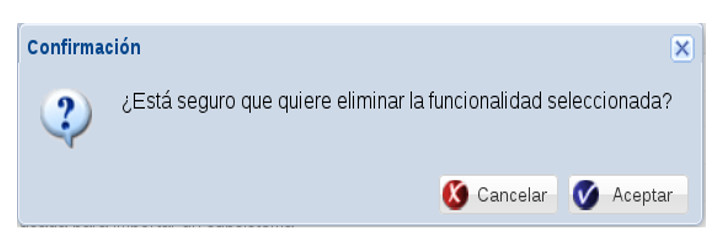
Figuara 10. Mensaje de confirmación.
- Modificar una funcionalidad previamente seleccionada, se muestra la interfaz con los datos de la misma. Luego de realizar los cambios darle al boton Guardar.
Gestionar acciones
Para la gestión de acciones hay que tener en cuenta cuando estas pertenecen a una funcionalidad cuyo sistema es externo y cuando pertenecen a una funcionalidad de un sistema interno. Esto es importante saberlo poque en el primer caso se adicionan a través de una interfaz que permite agregarlas a la funcionalidad y pueden ser modificadas en su totalidad, en el segundo caso se mostraran todas las pertenecientes al fichero que correponde a dicha funcionalidad y solo podra modificarse la descripción de las misma.
Caso 1. Acciones pertenecientes a una funcionalidad de un sistema externo.
Figura 11. Interfaz configuración de subsistemas (Listado de acciones).
1. Adicionar una acción, se mostrará una interfaz como en la Figura 12 donde podrán agregar los datos de la acción a adicionar.
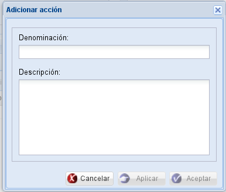
Figura 12. Interfaz de adicionar acción.
- Campos para escribir la denominación y la descripción de la acción a agregar.
- Adicionar la acción a la funcionalidad y cerrar ventana.
- Adicionar la acción a la funcionalidad y permanecer en la ventana.
- Cancelar y salir de la interfaz sin adicionar los datos.
2. Eliminar una acción previamente seleccionada, el sistema siempre mostrará un mensaje de confirmación de la acción, que puede aceptar o no según convenga, ver Figura 13. Se puede realizar esta operación oprimiendo la tecla (Alt+D).
3. Modificar una acción previamente seleccionada, se presiona doble clic en el grid en el campo denominación.Luego de realizar los cambios se presiona el botón Guardar.
4. Modificar una acción previamente seleccionada, se presiona doble clic en el grid en el campo descripción.Luego de realizar los cambios se presiona el botón Guardar.
5. Buscar la acción deseada.
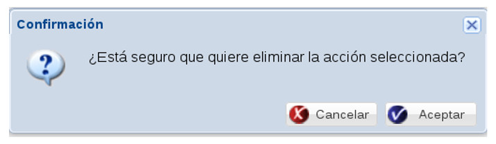
Caso 2. Acciones pertenecientes a una funcionalidad de un sistema interno.

Figura 14. Interfaz configuración de subsistemas.
1. Buscar la acción en el listado de acciones. Al escribir un criterio de búsqueda, el sistema busca y muestra todas las acciones correspondiente con este criterio.
2. Modificar una acción previamente seleccionada, se presiona doble clic en el grid en el campo descripción. Luego de realizar los cambios se presiona el botón Guardar.
3. Marcar o desmarcar las acciones que utilizará la funcionalidad. Luego de realizar los cambios se presiona el botón Guardar.
Gestionar recursos
Esta funcionalidad permitirá gestionar los recursos, los cuales no son más que agrupaciones lógicas de las acciones previamente registradas, con el objetivo de abstraer al administrador del sistema de la lógica de implementación en el proceso de creación de roles y grupos (Autorización). Posibilita adicionar, modificar y eliminar un recurso, se accede a través de la opción Seguridad/Configuración de subsistemas.

Figura 15. Interfaz configuración de subsistemas.
1. Adicionar recursos.Para realizar esta acción se debe seleccionar en el arbol la funcionalidad a la cual pertenecera el recurso luego darle al boton adicionar. Se puede acceder a esta funcionalidad con las teclas (Alt+I+R).
2. Eliminar un recurso previamente seleccionado en el árbol, el sistema siempre mostrará un mensaje de confirmación de la acción que puede aceptar o no según convenga, ver figura 16. Se puede realizar esta operación seleccionando el recurso en el árbol y oprimiendo la tecla (DEL).
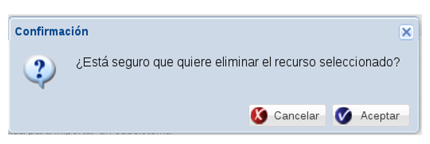
3. Modificar un recurso previamente seleccionado, se muestra la interfaz con los datos del mismo. Luego de realizar los cambios darle al boton Guardar.
Nota: Al seleccionar un recurso se activa el grid de acciones para poder asignarles acciones al recurso. Ver índice gestionar acciones.
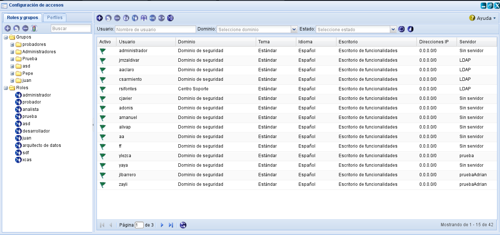
Para llevar a cabo la configuración de accesos se accede a través de Inicio/Seguridad/Configuración de accesos.
Grupos
Esta funcionalidad permitirá gestionar los grupos que se podrán usar en la aplicación. Es necesario que existan sistemas debidamente estructurados para poder realizar las acciones de esta funcionalidad, ver Figura 18. Posibilita adicionar, modificar, regular acciones, eliminar y buscar un grupo, se accede a través de la opción Seguridad/Configurar usuarios/Roles y grupos.
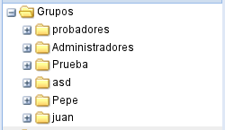
Figura 18. Árbol de grupos.
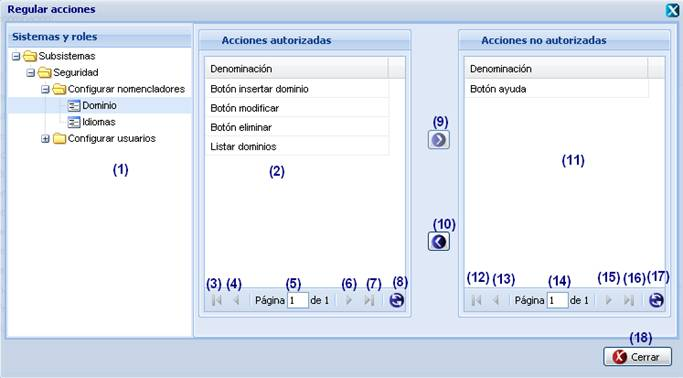
Las opciones de la figura anterior permiten:
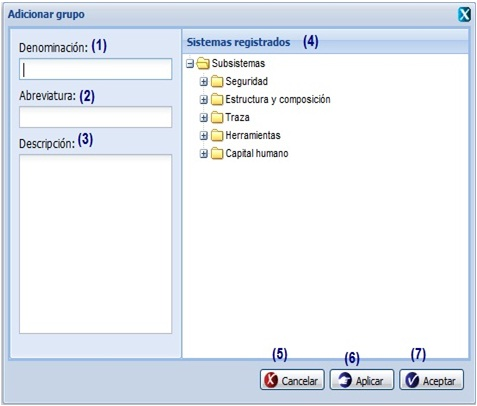
Las opciones de la figura anterior permiten:
- Insertar la denominación del grupo.
- Insertar la abreviatura.
- Insertar la descripción.
- Permite seleccionar las funcionalidades que están registradas previamente en el sistema las cuales que estarán contenidas en el grupo. Las funcionalidades deben haber sido previamente configuradas conteniendo acciones y recursos.
- Cancelar las acciones y salir de la interfaz sin guardar los datos.
- Guardar y limpiar los datos de la interfaz permitiendo adicionar otro grupo.
- Adicionar el grupo a la lista y cerrar la interfaz.
Nota: Los campos (denominación y abreviatura) son obligatorios para realizar esta operación. En caso de que se deje alguno vacío el sistema mostrará un mensaje de error.
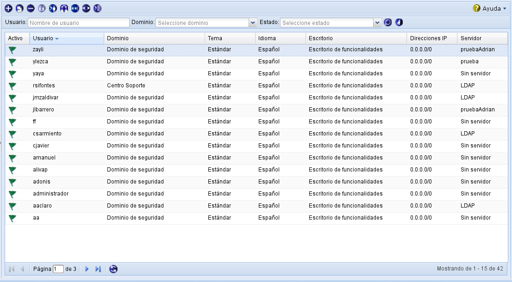
Figura 21. Interfaz Gestionar usuarios.
Las opciones de la figura anterior permiten:
- Adicionar un usuario. Cuando se desea adicionar un usuario y los valores asignados a el(los) atributo(s) con restricción de unicidad ya existen, el sistema muestra un mensaje de error.
- Modificar un usuario previamente seleccionado, se muestra la interfaz con los datos del mismo. Cuando se desea modificar un usuario registrado y los valores asignados a el(los) atributo(s) con restricción de unicidad ya existen, el sistema muestra un mensaje de error.
- Eliminar el(los) usuario(s) previamente seleccionado(s) en el listado, el sistema siempre mostrará un mensaje de confirmación de la acción que puede aceptar o no según convenga. Se puede realizar esta operación seleccionando el usuario en el listado y oprimiendo la tecla DEL. Si se presiona el botón Aceptar, el sistema verifica que el(los) usuario(s) no se encuentre(n) en uso en el sistema, en caso contrario mostrará un mensaje de error indicando que el(los) usuario(s) no puede(n) ser eliminado(s).
- Asignar roles a el(los) usuario(s) seleccionado(s).
- Asignar perfil a un usuario.
- Cambiar la contraseña del usuario que está accediendo al sistema.
- Ver perfil del usuario seleccionado. El sistema muestra la interfaz con los datos del usuario seleccionado previamente. El usuario debe estar asignado a una persona, en caso contrario el sistema mostrará un mensaje de error.
- Importar un usuario.
- Mostrar la ayuda detallada de la funcionalidad.
- Introducir el nombre del usuario a buscar en el listado.
- Introducir el dominio donde se encuentra el usuario a buscar en el listado.
- Introducir el estado del usuario a buscar en el listado.
- Buscar el usuario en el listado. Si no se selecciona un criterio de búsqueda y se selecciona esta opción, el sistema busca y muestra todos los usuarios registrados.
- Limpiar el filtro de la búsqueda realizada. Se puede acceder a esta funcionalidad con las teclas.
- Mostrar el listado de los usuarios registrados.
- Activar y desactivar usuarios. Para realizar esta acción se presiona doble clic sobre la fila correspondiente al usuario al cual se le desea modificar su estado a activo o inactivo respectivamente, el doble clic se presiona en la columna Activo
- Ir a la primera página.
- Ir a la página anterior.
- Mostrar el número de la página donde se encuentra, puede introducir el número en caso de que desee buscar una específica.
- Ir a la página siguiente.
- Ir a la última página.
- Actualizar el listado de los usuarios.
- Mostrar la cantidad de resultados encontrados.
Nota: Las opciones (17), (18), (20) y (21) se habilitarán cuando exista más de una página con datos en la interfaz.
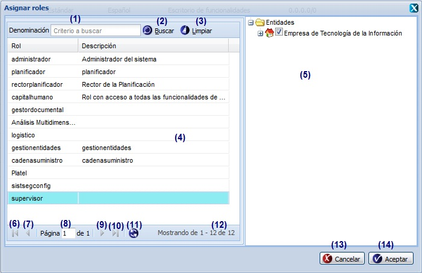
Figura 22. Interfaz Asignar roles.
Las opciones de la figura anterior permiten:
- Introducir la denominación del rol a buscar en el listado.
- Buscar el rol en el listado. Si no se selecciona un criterio de búsqueda y se selecciona esta opción, el sistema busca y muestra todos los roles registrados. Se puede acceder a esta funcionalidad con las teclas (Alt+B).
- Limpiar el filtro de la búsqueda realizada. Se puede acceder a esta funcionalidad con las teclas (Alt+L).
- Mostrar el listado de todos los roles registrados en el sistema a los que se tiene permiso.
- Mostrar el árbol de las entidades donde se deberá seleccionar la(s) entidad(es) en las que el usuario jugará dicho rol.
- Ir a la primera página.
- Ir a la página anterior.
- Mostrar el número de la página donde se encuentra, puede introducir el número en caso de que desee buscar una específica.
- Ir a la página siguiente.
- Ir a la última página.
- Actualizar el listado de los roles.
- Mostrar la cantidad de resultados encontrados.
- Cancelar las acciones y salir de la interfaz sin guardar los datos.
- Asignar el rol al usuario y cerrar la interfaz.
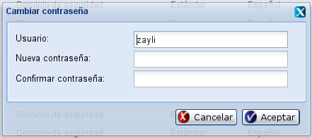
Las opciones de la figura anterior permiten:
-
Mostrar el usuario autenticado sin permitir cambiarlo.
-
Insertar la nueva contraseña. El valor de la contraseña debe cumplir con lo establecido en la configuración de la clave que se realizó previamente, en caso contrario el sistema mostrará un mensaje de error.
-
Confirmar la nueva contraseña.
-
Cancelar las acciones y salir de la interfaz sin guardar los datos.
-
Cambiar la contraseña actual del usuario autenticado.
Nota: Todos los campos son obligatorios para realizar esta operación. En caso de que se deje alguno vacío el sistema mostrará un mensaje de error.

Figura 24. Interfaz Asignar perfil.
Las opciones de la figura anterior permiten:
1. Introducir la denominación de la persona a buscar en el listado. Se requiere un mínimo de tres caracteres.
2. Busqueda avanzada. Ver Figura 25
3. Listado de personas.
4. Ir a la primera página.
5. Ir a la página anterior.
6. Mostrar el número de la página donde se encuentra, puede introducir el número en caso de que desee buscar una específica.
7. Ir a la página siguiente.
8. Ir a la última página.
9. Actualizar el listado de personas.
10. Número de resultodos mostrados por página.
11. Mostrar la cantidad de resultados encontrados.
12. Cancelar las acciones y salir de la interfaz sin guardar los datos.
13. Asignar el usuario y cerrar la interfaz.

Figura 25. Interfaz Asignar perfil.
- Seleccionar el tipo de identidad entre: carnet de identidad, número de expediente de las FAR, número de expediente del MININT, pasaporte o número de solapín UCI.
- Insertar el nombre.
- Insertar el sexo.
- Insertar la categoría seleccionando entre las siguientes: sin categoría, oficial, suboficial, sargento, cabo, soldado, alumno o trabajador civil.
- Insertar el número de identidad.
- Insertar el segundo nombre.
- Insertar el primer apellido.
- Insertar el segundo apellido.
- Salir de la interfaz.
- Limpiar el filtro de la búsqueda realizada.Buscar la(s) persona(s) que coincida(n) con el/los criterio(s) de búsqueda.
Adicionar usuario
A continuación se describen los pasos a seguir para adicionar un usuario:
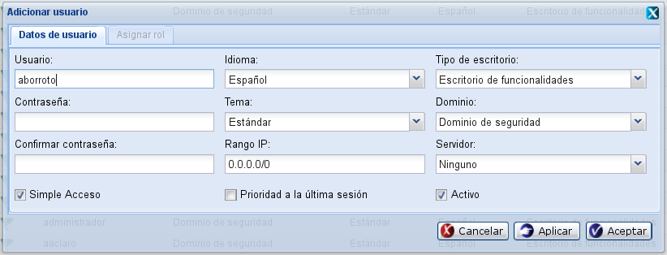
Figura 26. Interfaz Adicionar usuario.
-
Insertar el usuario. Este campo admite que se introduzcan solo caracteres alfanuméricos y los caracteres especiales (-_. @) y es obligatorio, en caso contrario el sistema mostrará un mensaje de error.
-
Insertar la contraseña.
-
Confirmar la contraseña insertada. La confirmación de la contraseña debe corresponderse con la contraseña introducida en el campo anterior, en caso contrario el sistema mostrará un mensaje de error.
-
Crear un usuario con simple acceso, para garantizar que se pueda acceder con ese usuario desde una máquina a la vez.
-
Seleccionar el idioma de preferencia.
-
Seleccionar el tema de preferencia.
-
Insertar el rango IP. El rango IP debe estar en el formato definido, en caso contrario el sistema mostrará un mensaje de error.
-
Establecer, en caso de que el usuario sea de simple acceso, si se le dará prioridad a la última sesión que se levante con ese usuario, para esto se marca el campo Prioridad a la última sesión.
-
Seleccionar el tipo de escritorio.
-
Seleccionar el dominio.
-
Seleccionar el servidor.
-
Establecer el usuario como activo o inactivo.
-
Cancelar las acciones y salir de la interfaz sin guardar los datos.
-
Guardar y limpiar los datos de la interfaz permitiendo adicionar otro rol.
-
Adicionar el usuario a la lista y cerrar la interfaz.
Importar usuario
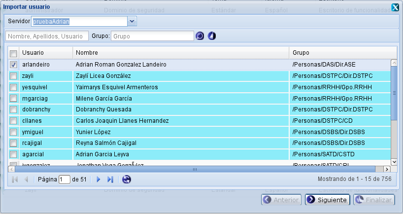
Figura 27. Interfaz Importar usuario.
Las opciones de la figura anterior permiten:
-
Seleccionar el servidor del cual se desea importar el usuario.
-
Seleccionar el usuario que se desea importar.
Si se presiona el botón Siguiente se muestra otra interrfaz que permitirá configurar el usuario que se desean importar, ver Figura 28.
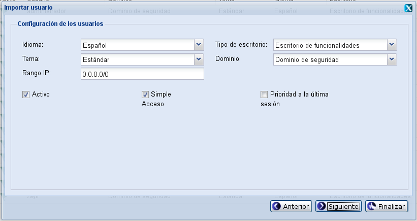
Figura 28. Configuración de los usuarios a importar.
Luego de realizar las modificaciones deseadas se presiona el botón Finalizar y se muestra el mensaje de confirmación: “¿Está seguro que desea importar los usuarios con la configuración especificada?”. En caso afirmativo se adiciona el usuario al listado de usuarios mostrado.
Gestionar campos del perfil de usuario
Esta funcionalidad permitirá gestionar los campos del perfil de usuario que se vayan a utilizar por cada aplicación, ver Figura 29. Posibilita adicionar, modificar y eliminar campos del perfil de usuario. Se accede a través de la opción Seguridad/Configuración de accesos/Perfiles.

Figura 29. Gestionar campos perfil de usuario.
Las opciones de la figura anterior permiten:
-
Adicionar un campo. Cuando se desea adicionar un campo y los valores asignados a el(los) atributo(s) con restricción de unicidad ya existen, el sistema muestra un mensaje de error. También se puede acceder a esta funcionalidad presionando clic derecho y seleccionando la opción Adicionar campo.
-
Modificar un campo previamente seleccionado, se muestra la interfaz con los datos del mismo. Cuando se desea modificar un campo registrado y los valores asignados a el(los) atributo(s) con restricción de unicidad ya existen, el sistema muestra un mensaje de error. También se puede acceder a esta funcionalidad presionando clic derecho y seleccionando la opción Modificar campo.
-
Eliminar un campo previamente seleccionado en el listado, el sistema siempre mostrará un mensaje de confirmación de la acción que puede aceptar o no según convenga. También se puede acceder a esta funcionalidad presionando clic derecho y seleccionando la opción Eliminar campo.
Al presionar el botón Aceptar, el sistema verifica que el campo no se encuentre en uso en el sistema, en caso contrario mostrará un mensaje de error indicando que el campo no puede ser eliminado.
Perfil de usuario
Esta funcionalidad permitirá gestionar el perfil de los usuarios registrados en el sistema, ver Figura 30. Posibilita adicionar, modificar, eliminar, asignar perfil, cambiar contraseña e importar usuario. Se accede a través de la opción Seguridad/Configuración de accesos/Perfiles.

Figura 30. Interfaz Gestionar perfil de usuario.
Las opciones de la figura anterior permiten:
-
Adicionar un usuario. Cuando se desea adicionar un usuario y los valores asignados a el(los) atributo(s) con restricción de unicidad ya existen, el sistema muestra un mensaje de error.
-
Modificar los datos de un perfil previamente seleccionado, se muestra la interfaz con los datos del mismo.
-
Eliminar el(los) usuario(s) previamente seleccionado(s) en el listado, el sistema siempre mostrará un mensaje de confirmación de la acción que puede aceptar o no según convenga. Se puede realizar esta operación seleccionando el usuario en el listado y oprimiendo la tecla DEL. Al presionar el botón Aceptar, el sistema verifica que el(los) usuario(s) no se encuentre(n) en uso en el sistema, en caso contrario mostrará un mensaje de error indicando que el(los) usuario(s) no puede(n) ser eliminado(s).
-
Asignar perfil a un usuario.
-
Cambiar la contraseña del usuario que está accediendo al sistema.
-
Importar usuario.
-
Mostrar la ayuda detallada de la funcionalidad.
-
Introducir el nombre del usuario a buscar en el listado.
-
Introducir el dominio donde se encuentra el usuario a buscar en el listado.
-
Introducir el estado del usuario a buscar en el listado.
-
Buscar el usuario en el listado. Si no se selecciona un criterio de búsqueda y se selecciona esta opción, el sistema busca y muestra todos los usuarios registrados. Se puede acceder a esta funcionalidad con las teclas.
-
Limpiar el filtro de la búsqueda realizada. Se puede acceder a esta funcionalidad con las teclas.
-
Mostrar el listado de los usuarios registrados con sus respectivos campos.
-
Ir a la primera página.
-
Ir a la página anterior.
-
Mostrar el número de la página donde se encuentra, puede introducir el número en caso de que desee buscar una específica.
-
Ir a la página siguiente.
-
Ir a la última página.
-
Actualizar el listado de los usuarios.
-
Mostrar la cantidad de resultados encontrados.
Nota: Las opciones (17), (18), (20) y (21) se habilitarán cuando exista más de una página con datos en la interfaz.
Roles
Esta funcionalidad permitirá gestionar los roles que se podrán usar en la aplicación. Es necesario que existan sistemas debidamente estructurados para poder realizar las acciones de esta. Posibilita adicionar, modificar, regular acciones, eliminar y buscar un rol, se accede a través de la opción Inicio/Seguridad/Configuración de accesos /Roles y grupos, ver Figura 17.
Adicionar rol
Para adicionar un rol se selecciona la carpeta Roles que se muestra a la izquierda de la interfaz Configuración de accesos en la pestaña Roles y grupos, ver Figura 31.

Figura 31. Árbol de roles existentes.
Producida esta acción se puede realizar una de las siguientes acciones:
-
Se presiona el botón que se ubica en el menú de opciones que aparece sobre el listado de grupos y roles.
-
Se presiona clic derecho y se selecciona la opción Adicionar.
Luego de realizar una de las acciones anteriores se muestra la interfaz Adicionar rol, ver Figura 32.
A continuación se describen los pasos a seguir para adicionar un rol:
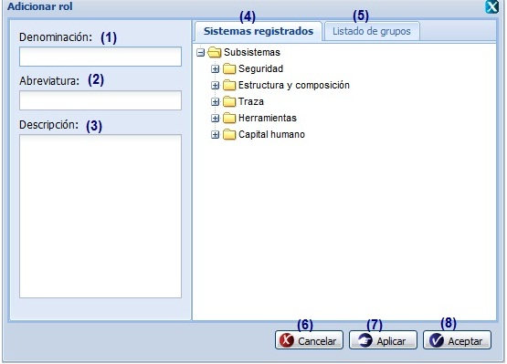
Las opciones de la figura anterior permiten:
5. Seleccionar el grupo al cual se desea asociar. Ver figura 2.
Nota: Los campos (denominación y abreviatura) son obligatorios para realizar esta operación. En caso de que se deje alguno vacío el sistema mostrará un mensaje de error.
Cuando se desea adicionar un rol y los valores asignados a el(los) atributo(s) con restricción de unicidad ya existen, el sistema muestra un mensaje de error.
Eliminar rol
Para eliminar un rol se accede a la interfaz Configuración de accesos, en la pestaña Roles y grupos, ver Figura 17 y dentro de la carpeta Roles se selecciona el rol que se quiere eliminar, producida esta acción se presiona el botón o se presiona clic derecho sobre el rol que se desee eliminar y se selecciona la opción: Eliminar. A continuación se muestra el mensaje de confirmación: “¿Está seguro que quiere eliminar el rol seleccionado?”, en caso afirmativo se elimina el rol y se muestra el mensaje informativo: “El rol ha sido eliminado satisfactoriamente”
Modificar rol
Para modificar un rol se accede a la interfaz Configuración de accesos, en la pestaña Roles y grupos ver Figura 17 y dentro de la carpeta Roles se selecciona el rol que se quiere modificar, producida esta acción se presiona el botón o se presiona clic derecho sobre el rol que se desee modificar y se selecciona la opción: Modificar. A continuación se muestra la interfaz Modificar rol, ver Figura 33, que permitirá modificar los atributos del rol seleccionado.
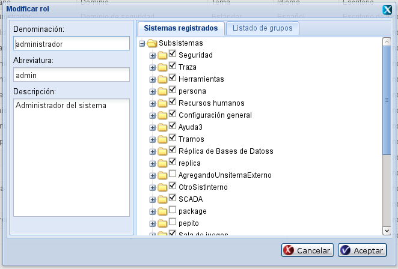
Figura 33. Interfaz Modificar rol.
Cuando se desea modificar un rol registrado y los valores asignados a el(los) atributo(s) con restricción de unicidad ya existen, el sistema muestra un mensaje de error.
Se accede a través de la opción Seguridad/Compartimentación/Permisos de sistemas a dominios.
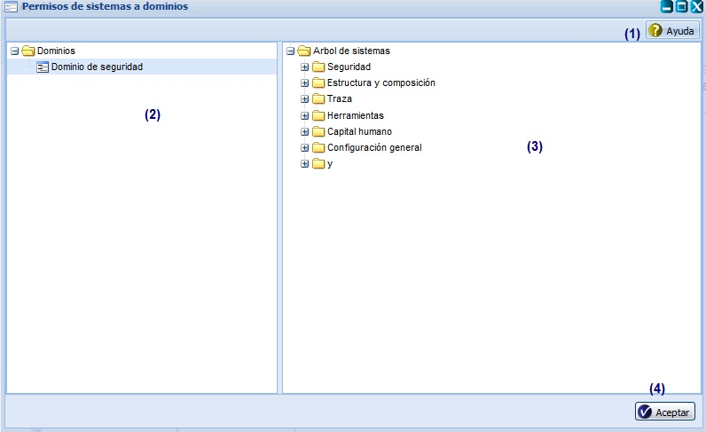
Las opciones de la figura anterior permiten:
1.Mostrar la ayuda detallada de la funcionalidad.
Se accede a través de la opción Seguridad/Compartimentación/Permisos de roles a dominios.
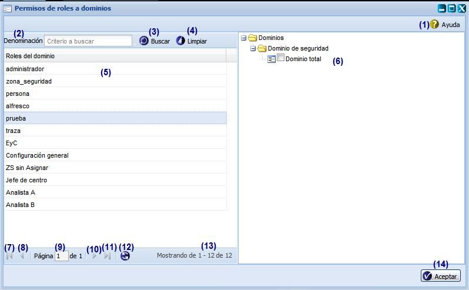
Las opciones de la figura anterior permiten:
1. Mostrar la ayuda detallada de la funcionalidad.
2. Insertar la denominación del rol a buscar en el listado.
3. Buscar el rol en el listado. Si no se selecciona un criterio de búsqueda y se selecciona esta opción, el sistema busca y muestra todos los roles registrados. Se puede acceder a esta funcionalidad con las teclas (Alt+B)
4. Limpiar el filtro de la búsqueda realizada. Se puede acceder a esta funcionalidad con las teclas (Alt+L)
5. Mostrar el listado de los roles registrados.
6. Mostrar el árbol de dominios donde se seleccionará el (los) dominio(s) en los cuales se asignará el(los) rol(es) seleccionado(s).
7. Ir a la primera página.
8. Ir a la página anterior.
9. Mostrar el número de la página donde se encuentra, puede introducir el número en caso de que desee buscar una específica.
10. Ir a la página siguiente.
11. Ir a la última página.
12. Actualizar el listado de roles registrados.
13. Mostrar la cantidad de resultados encontrados.
14. Guardar los cambios y actualizar el árbol de dominios.
Nota: Las opciones (7), (8), (10) y (11) se habilitarán cuando exista más de una página con datos en la interfaz.
Permisos de usuarios a dominios
Esta funcionalidad permitirá gestionar el acceso a la información registrada en los dominios seleccionados, ver figura 36.
Se accede a través de la opción Seguridad/Compartimentación/Permisos de usuarios a dominios.
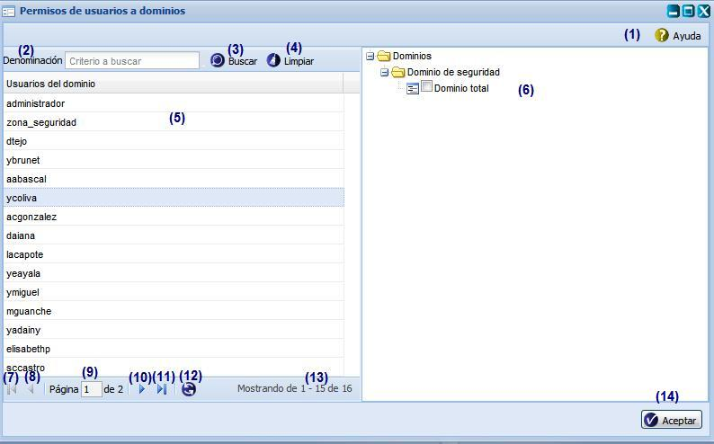
Figura 36. Permisos de usuarios a dominios
Las opciones de la figura anterior permiten:
- Motrar la ayuda detallada de la funcionalidad.
- Insertar la denominación del usuario a buscar en el listado.
- Buscar el usuario en el listado. Si no se seleciona un criterio de búsqueda y se selecciona esta opción, el sistema busca y muestra todos los usuarios registrados. Se puede acceder a esta funcionalidad con las teclas (Alt+B)
- Limpiar el filtro de la búsqueda realizada. Se puede acceder a esta funcionalidad con las teclas (Alt+L)
- Mostrar el listado de los usuarios registrados.
- Mostrar el árbol de dominios donde se seleccionará el (los) dominio(s) a los que tendrá permisos el usuario para ver la información registrada en estos.
- Ir a la primera página.
- Ir a la página anterior.
- Mostrar el número de la página donde se encuentra, puede introducir el número en caso de que desee buscar una específica.
- Ir a la página siguiente.
- Ir a la última página.
- Actualizar el listado de usuarios del dominio.
- Mostrar la cantidad de resultados encontrados.
- 14. Guardar los cambios y actualizar el árbol de dominios.
Nota: Las opciones (7), (8), (10) y (11) se habilitarán cuando exista más de una página con datos en la interfaz.
Desbloqueo de usuarios e IP
En este módulo se desbloquean aquellos usuarios e IP donde el número de intentos fallidos haya excedido el valor introducido en la gestión de la configuración general.
Usuario
Esta funcionalidad permitirá gestionar el desbloqueo de usuarios, así como la búsqueda de los mismos, ver Figura 37.
Se accede a través de la opción Seguridad/Desbloqueo de usuarios e IP/Usuario.
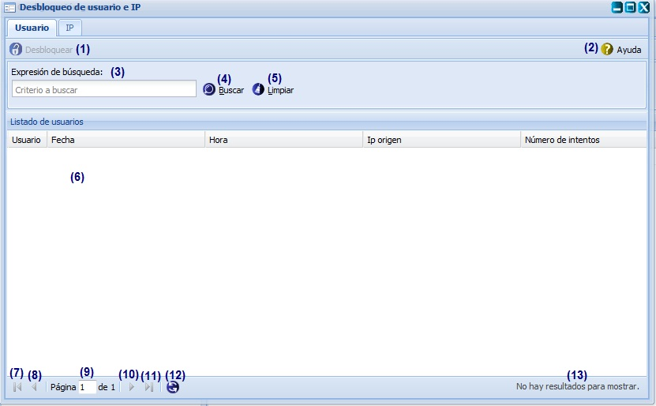
Figura 37. Interfaz Gestionar desbloqueo de usuario.
1. Desbloquear los usuarios que se encuentren bloqueados.
2. Mostrar la ayuda detallada de la funcionalidad.
3. Introducir la expresión de búsqueda a buscar en el listado.
4. Buscar el usuario en el listado. Si no se selecciona un criterio de búsqueda y se selecciona esta opción, el sistema busca y muestra todas los usuarios registrados. Se puede acceder a esta funcionalidad con las teclas (Alt + B).
5. Limpiar el filtro de la búsqueda realizada. Se puede acceder a esta funcionalidad con las teclas (Alt + L).
6. Mostrar el listado de usuarios.
7. Ir a la primera página.
8. Ir a la página anterior.
9. Mostrar el número de la página donde se encuentra, puede introducir el número en caso de que desee buscar una específica.
10. Ir a la página siguiente.
11. Ir a la última página.
12. Actualizar el listado de usuarios.
13. Mostrar la cantidad de resultados encontrados.
Nota: Las opciones (7), (8), (10) y (11) se habilitarán cuando exista más de una página con datos en la interfaz
IP
Esta funcionalidad permitirá gestionar el desbloqueo de IP, así como la búsqueda de los mismos, ver Figura 38. Se accede a través de la opción Seguridad/Desbloqueo de usuarios e IP/IP.
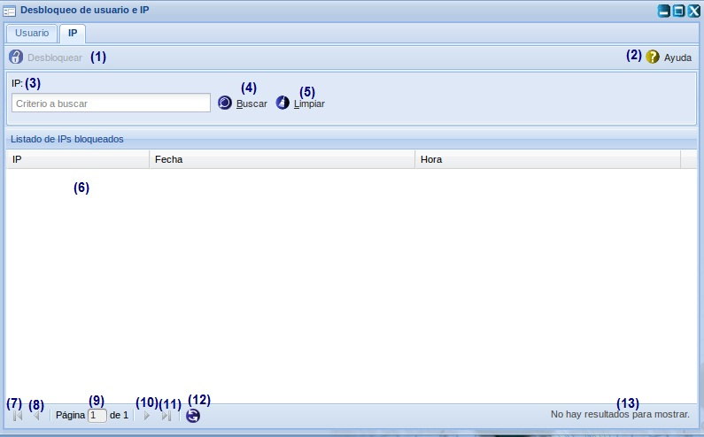
Figura 38. Interfaz Gestionar desbloqueo de IP.
1. Desbloquear los IP que se encuentren bloqueados.
4. Buscar el IP en el listado. Si no se selecciona un criterio de búsqueda y se selecciona esta opción, el sistema busca y muestra todas los IP registrados. Se puede acceder a esta funcionalidad con las teclas (Alt + B).
6. Mostrar el listado de IP.
7. Ir a la primera página.
8. Ir a la página anterior.
9. Mostrar el número de la página donde se encuentra, puede introducir el número en caso de que desee buscar una específica.
10. Ir a la página siguiente.
11. Ir a la última página.
12. Actualizar el listado de IP.
13. Mostrar la cantidad de resultados encontrados.
Nota: Las opciones (7), (8), (10) y (11) se habilitarán cuando exista más de una página con datos en la interfaz
Esta funcionalidad tiene como propósito la configuración de las claves de acceso para la fortaleza de las mismas, la configuración de las trazas fuera de proceso, el bloqueo de usuarios y direcciones IP. Además la configuración del dominio, los servidores, los temas, los tipos de escritorios y las expresiones regulares. Se accede a través de la opción Seguridad/Configuración general.
Introducción a la configuración general
Esta funcionalidad permitirá gestionar la configuración del sistema que se podrán usar en la aplicación, ver Figura 39.
Posibilita la configuración de la clave, la traza y el bloqueo de usuario e IP, se accede a través de la opción Seguridad/Configuración general.
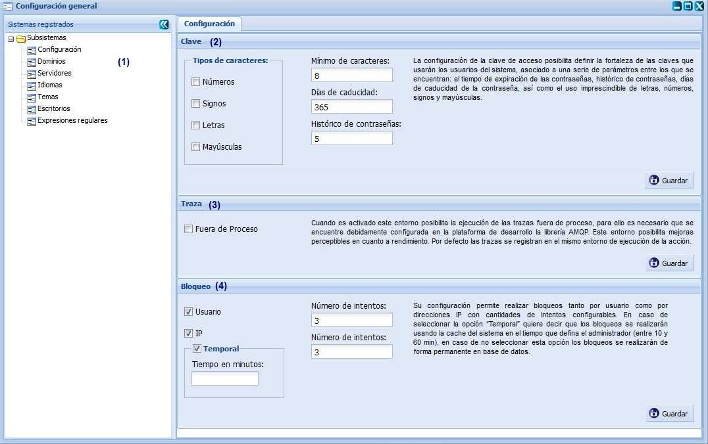
Figura 39. Interfaz Configuración general.
Las opciones de la figura anterior permiten:
1. Seleccionar el subsistema para su configuración.
2. Configurar la clave de acceso, posibilitando definir la fortaleza de las claves que usarán los usuarios del sistema, asociado a una serie de parámetros entre los que se encuentran: el tiempo de expiración de las contraseñas, histórico de contraseñas, días de caducidad de la contraseña, así como el uso imprescindible de letras, números, signos y mayúsculas.
3. Configurar trazas fuera de proceso, cuando es activado este entorno posibilita la ejecución de las trazas fuera de proceso, para ello es necesario que se encuentre debidamente configurada en la plataforma de desarrollo la librería AMQP. Este entorno posibilita mejoras perceptibles en cuanto a rendimiento. Por defecto las trazas se registran en el mismo entorno de ejecución de la acción.
4. Configurar bloqueo de usuarios y direcciones IP, permitiendo realizar bloqueos tanto por usuario como por direcciones IP con cantidades de intentos configurables. En caso de seleccionar la opción “Temporal” quiere decir que los bloqueos se realizarán usando la cache del sistema en el tiempo que defina el administrador (entre 10 y 60 min), en caso de no seleccionar esta opción los bloqueos se realizarán de forma permanente en base de datos.
Configurar bloqueo de usuarios y direcciones IP
A continuación se describen los pasos a seguir para configurar bloqueo de usuarios y direcciones IP: 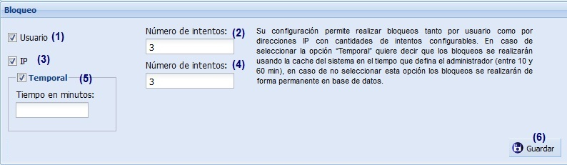
Figura 40. Interfaz Configuración de bloqueo de usuarios y direciones IP.
Las opciones de la figura anterior permiten:
1. Seleccionar que el sistema pueda realizar bloqueos a los usuarios que introduzcan incorrectamente las claves de acceso.
2. Determinar la cantidad de intentos que los usuarios pueden introducir incorrectamente las claves de acceso.
3. Seleccionar que el sistema pueda realizar bloqueos a las direcciones IP donde se introduzcan incorrectamente las claves de acceso.
4. Determinar la cantidad de intentos del IP donde se pueden introducir incorrectamente las claves de acceso.
5. Seleccionar que los bloqueos se realicen usando la cache del sistema en el tiempo que defina el administrador (entre 10 y 60 min), en caso de no seleccionar esta opción los bloqueos se realizarán de forma permanente en base de datos.
6. Guardar los cambios de la configuración del bloqueo.
Configurar clave de acceso
A continuación se describen los pasos a seguir para configurar la clave de acceso:
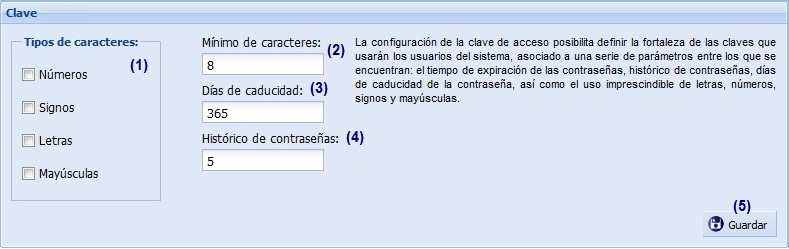
Figura 41. Interfaz Configuración de clave de acceso.
Las opciones de la figura anterior permiten:
1. Seleccionar el/los tipo/s de caracteres que tendrá la clave.
2. Insertar el mínimo de caracteres. El valor del campo debe ser mayor a ocho y menor que treinta.
3. Insertar los días de caducidad. El valor del campo debe ser mayor a diez y menor que trescientos sesenta y cinco.
4. Histórico de contraseña. El valor del campo debe ser mayor a uno y menor que diez.
5. Guardar los cambios de la configuración de la clave de acceso.
Configurar trazas fuera de proceso
A continuación se describen los pasos a seguir para configurar trazas fuera de proceso: 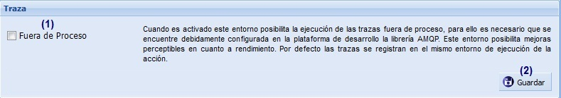
Las opciones de la figura anterior permiten:
1. Activar las trazas para ejecutarla fuera de proceso.
2. Guardar los cambios de la configuración de la traza.
Gestión de configuración
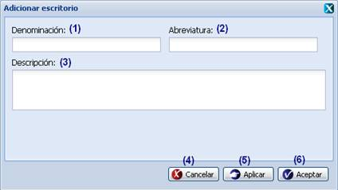
Figura 43. Interfaz Adicionar escritorio.
Las opciones de la figura anterior permiten:
Posibilita adicionar, modificar y eliminar un escritorio, se accede a través de la opción Seguridad/Configuración general y luego selecciona el subsistema Escritorio.
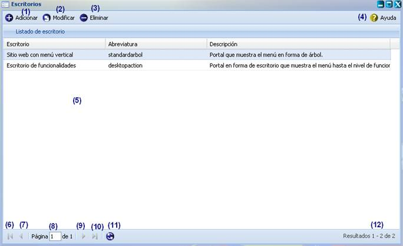
Las opciones de la figura anterior permiten:
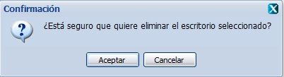
Figura 45. Mensaje de confirmación.
4. Mostrar la ayuda detallada de la funcionalidad.
5. Mostrar el listado de los tipos de escritorios.
6. Ir a la primera página.
7. Ir a la página anterior.
8. Mostrar el número de la página donde se encuentra, puede introducir el número en caso de que desee buscar una específica.
9. Ir a la página siguiente.
10. Ir a la última página.
11. Actualizar el listado de tipos de escritorios.
12. Mostrar la cantidad de resultados encontrados.
Nota: Las opciones (6), (7), (9) y (10) se habilitarán cuando exista más de una página con datos en la interfaz.
Posibilita adicionar, modificar,eliminar y buscar una expresión regular, se accede a través de la opción Seguridad/Configuración general y luego selecciona el subsistema Expresiones regulares.
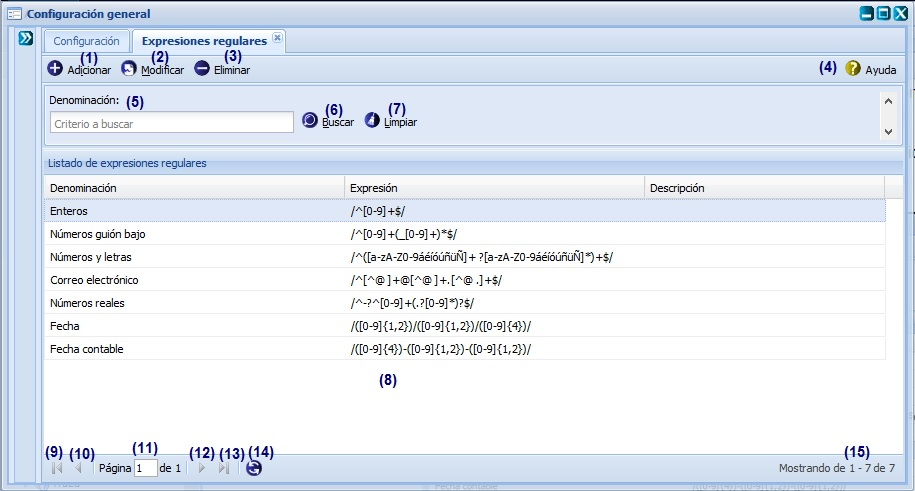
Las opciones de la figura anterior permiten:
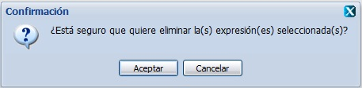
Figura 47. Mensaje de confirmación.
4. Mostrar la ayuda detallada de la funcionalidad.
5. Introducir la denominación de la expresión regular a buscar en el listado.
6. Buscar la expresión regular en el listado. Si no se selecciona un criterio de búsqueda y se selecciona esta opción, el sistema busca y muestra todas las expresiones regulares registradas. Se puede acceder a esta funcionalidad con las teclas (Alt+B).
7. Limpiar el filtro de la búsqueda realizada. Se puede acceder a esta funcionalidad con las teclas (Alt+L).
8. Mostrar el listado de las expresiones regulares.
9. Ir a la primera página.
10. Ir a la página anterior.
11. Mostrar el número de la página donde se encuentra, puede introducir el número en caso de que desee buscar una específica.
12. Ir a la página siguiente.
13. Ir a la última página.
14. Actualizar el listado de las expresiones regulares.
15. Mostrar la cantidad de resultados encontrados.
Nota: Las opciones (9), (10), (12) y (13) se habilitarán cuando exista más de una página con datos en la interfaz.
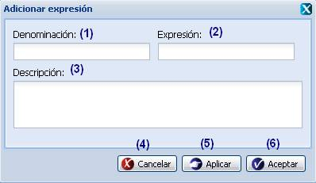
Figura 48. Interfaz Adicionar expresión regular.
Las opciones de la figura anterior permiten:
Posibilita adicionar, modificar y eliminar un tema, se accede a través de la opción Seguridad/Configuración general y luego selecciona el subsistema Temas.
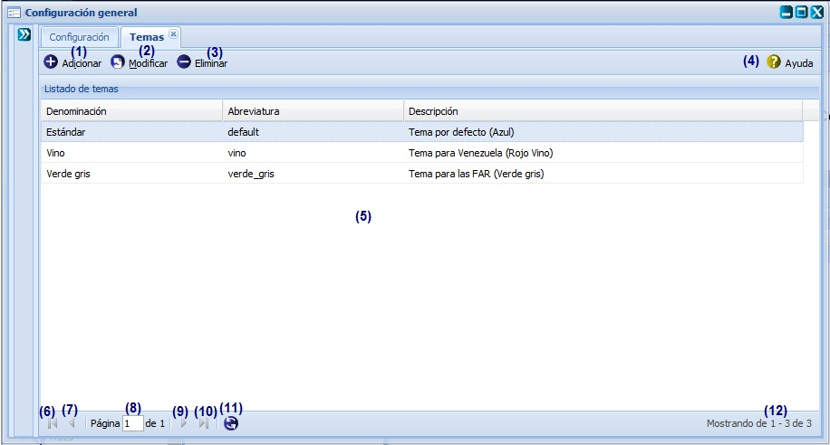
Figura 49. Interfaz Gestionar configuración de temas.
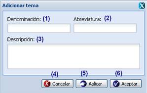
Figura 50. Interfaz Adicionar tema.
Las opciones de la figura anterior permiten:
Introducción a idioma
Esta funcionalidad permitirá gestionar los idiomas que se podrán usar en el sistema, ver Figura 51.
Posibilita adicionar, modificar y eliminar un idioma, se accede a través de la opción Seguridad/Configuración general y luego selecciona el subsistema Idiomas.
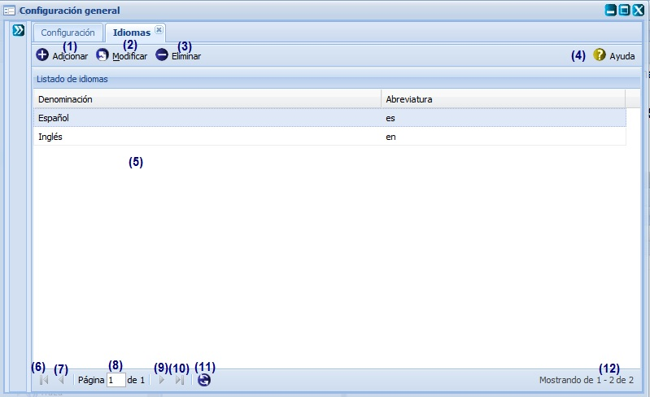
Figura 51. Interfaz Gestionar configuración de idiomas.
Las opciones de la figura anterior permiten:
1. Adicionar un idioma. Se puede acceder a esta funcionalidad con las teclas (Alt+I).
2. Modificar un idioma previamente seleccionado, se muestra la interfaz con los datos del mismo. Se puede acceder a esta funcionalidad con las teclas (Alt+M).
3. Eliminar un idioma previamente seleccionado en el listado, el sistema siempre mostrará un mensaje de confirmación de la acción que puede aceptar o no según convenga, ver Figura 52. Se puede realizar esta operación seleccionando el idioma en el listado y oprimiendo la tecla (DEL).
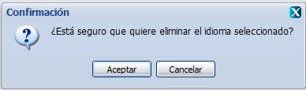
Figura 52. Mensaje de confirmación.
4. Mostrar la ayuda detallada de la funcionalidad.
5. Mostrar el listado de los idiomas registrados.
6. Ir a la primera página.
7. Ir a la página anterior.
8. Mostrar el número de la página donde se encuentra, puede introducir el número en caso de que desee buscar una específica.
9. Ir a la página siguiente.
10. Ir a la última página.
11. Actualizar el listado de los idiomas registrados.
12. Mostrar la cantidad de resultados encontrados.
Nota: Las opciones (6), (7), (9) y (10) se habilitarán cuando exista más de una página con datos en la interfaz.
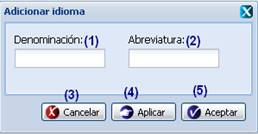
Las opciones de la figura anterior permiten:
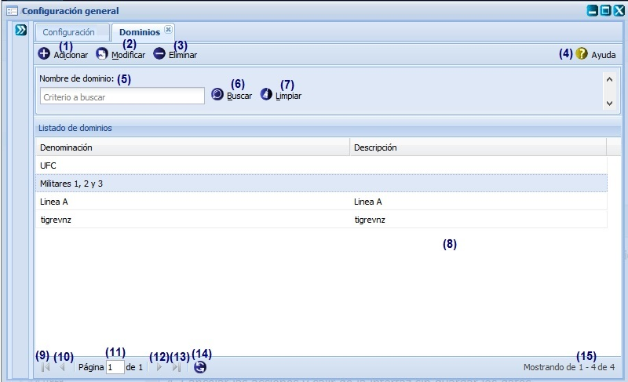
Figura 54. Interfaz Gestionar configuración de dominio.
Las opciones de la figura anterior permiten:
1. Adicionar un dominio. Se puede acceder a esta funcionalidad con las teclas (Alt+I).
2. Modificar un dominio previamente seleccionado, se muestra la interfaz con los datos del mismo. Se puede acceder a esta funcionalidad con las teclas (Alt+M).
3. Eliminar un dominio previamente seleccionado en el listado, el sistema siempre mostrará un mensaje de confirmación de la acción que puede aceptar o no según convenga, ver Figura 55. Se puede realizar esta operación seleccionando el dominio en el listado y oprimiendo la tecla (DEL).
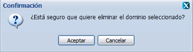
Figura 55. Mensaje de confirmación.
4. Mostrar la ayuda detallada de la funcionalidad.
5. Introducir el dominio a buscar en el listado.
6. Buscar el dominio en el listado. Si no se selecciona un criterio de búsqueda y se selecciona esta opción el sistema busca y muestra todos los dominios registrados. Se puede acceder a esta funcionalidad con las teclas (Alt+B).
7.Limpiar el filtro de la búsqueda realizada. Se puede acceder a esta funcionalidad con las teclas (Alt+L).
8. Mostrar el listado de dominios.
9. Ir a la primera página.
10. Ir a la página anterior.
11. Mostrar el número de la página donde se encuentra, puede introducir el número en caso de que desee buscar una específica.
12. Ir a la página siguiente.
13. Ir a la última página.
14. Actualizar el listado de dominios.
15. Mostrar la cantidad de resultados encontrados.
Nota: Las opciones (9), (10), (12) y (13) se habilitarán cuando exista más de una página con datos en la interfaz.
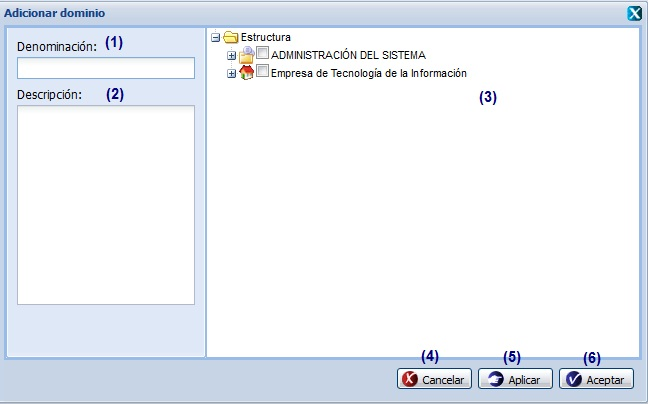
Figura 56. Interfaz Adicionar dominio.
Las opciones de la figura anterior permiten:
1. Introducir la denominación del dominio.
2. Insertar la descripción del dominio.
3. Seleccionar la estructura donde se insertará el dominio.
4. Cancelar las acciones y salir de la interfaz sin guardar los datos.
5. Guardar y limpiar los datos de la interfaz permitiendo adicionar otro dominio.
6. Adicionar el dominio al listado y cerrar la interfaz.
Configuración del captcha
Esta funcionalidad permitirá gestionar el captcha que consiste en que una persona proporcione una serie de caracteres que se le muestran distorsionados en pantalla, de tal forma que solamente un humano pueda interpretarlos, y no una máquina, ver Figura 57. Se accede a través de la opción Seguridad/Configuración general/Configuración del captcha.

Figura 57. Interfaz Configuración del captcha.
Las opciones de la figura anterior permiten:
-
Guardar los cambios realizados en la configuración, presionando el botón Guardar.
-
Configurar el captcha, luego de habilitar las opciones de configuración, tras se seleccionar el campo chequeable Habilitar captcha. Este entorno posibilita que sólo sea interpretable por las personas, permitiendo realizar configuraciones personalizadas de cada parámetro.
-
Configurar distorsión del captcha. Su configuración permite realizar arreglos personalizados de los niveles de distorsión.
-
Mostrar la vista previa del captcha. Cuando se realiza la configuración y se presiona la opción “Actualizar” se visualiza el captcha reemplazado.
Configurar captcha
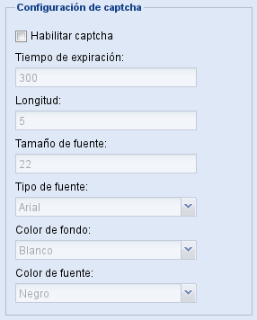
Figura 58. Interfaz configurar captcha.
Las opciones de la figura anterior permiten:
-
Activar/Desactivar la ejecución del captcha.
-
Insertar el tiempo de expiración. Este campo admite que se introduzcan solo caracteres numéricos, valores entre 60 y 3600.
-
Insertar la longitud. El campo solo admite que se introduzcan caracteres numéricos, con valores entre 4 y 8.
-
Insertar el tamaño de la fuente. Este campo admite que se introduzcan solo caracteres numéricos, con valores entre 15 y 25.
-
Seleccionar el tipo de fuente.
-
Seleccionar el color de fondo.
-
Seleccionar el color de fuente.
Configurar distorsión del captcha
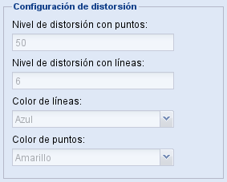
Figura 59. Interfaz configurar distorsión del captcha.
Las opciones de la Figura permiten:
-
Insertar el nivel de distorsión con puntos. Este campo admite que se introduzcan solo caracteres numéricos, valores entre 50 y 150.
-
Insertar el nivel de distorsión con líneas. El campo solo admite que se introduzcan caracteres numéricos, con valores entre 5 y 10.
-
Seleccionar el color de líneas.
-
Seleccionar el color de puntos.
Mostrar vista previa del captcha
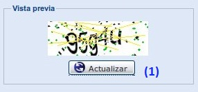
Figura 60. Mostrar vista previa del captcha.
La opción de la Figura 211permite:
-
Actualizar la vista previa del captcha con la configuración especificada.
Servidores
Garantiza la gestión de servidores tanto de bases de datos como de autenticación (Directorios Activos y servidores OpenLDAP).
Introducción a servidor
Esta funcionalidad permitirá gestionar todos los servidores que van a ser utilizados en la aplicación ya sean de datos o autenticación, ver Figura 61, permitiendo administrar internamente conexiones de forma dinámica tanto a base de datos como a servidores de autenticación.
Posibilita adicionar, modificar y eliminar un servidor, se accede a través de la opción Seguridad/Configuración general y luego selecciona el subsistema Servidores.
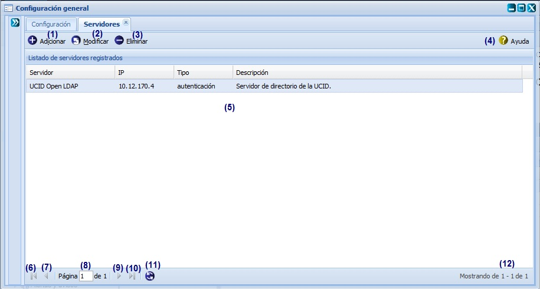
Figura 61. Interfaz Gestionar configuración de servidores.
Nota: En la parte superior derecha de la interfaz, se muestran opciones para minimizar , maximizar , restaurar o salir .
Las opciones de la figura anterior permiten:
2. Modificar un servidor previamente seleccionado, se muestra la interfaz con los datos del mismo. Se puede acceder a esta funcionalidad con las teclas (Alt M).
3. Eliminar el(los) servidor(es) previamente seleccionado(s) en el listado, el sistema siempre mostrará un mensaje de confirmación de la acción que puede aceptar o no según convenga, ver Figura 62. Se puede realizar esta operación seleccionando el(los) servidor(es) en el listado y oprimiendo la tecla DEL.
Figura 62. Mensaje de confirmación.
5. Mostrar un listado de los servidores registrados.
6. Ir a la primera página.
7. Ir a la página anterior.
8. Mostrar el número de la página donde se encuentra, puede introducir el número en caso de que desee buscar una específica.
9. Ir a la página siguiente.
10. Ir a la última página.
11. Actualizar el listado de servidores registrados.
12. Mostrar la cantidad de resultados encontrados.
Nota: Las opciones (6), (7), (9) y (10) se habilitarán cuando exista más de una página con datos en la interfaz.
Adicionar servidor
A continuación se describen los pasos a seguir para adicionar un servidor:
Las opciones de la figura anterior permiten:
1. Introducir el servidor a adicionar.
2. Insertar la dirección IP, esta debe estar en el formato definido.
3. Seleccionar el tipo de servidor, al seleccionar un servidor de autenticación la interfaz automáticamente se modificará. Ver Figura 65.
4. Introducir la descripción del servidor.
5. Cancelar las acciones y salir de la interfaz sin guardar los datos.
6. Guardar y limpiar los datos de la interfaz permitiendo adicionar otro servidor.
7. Adicionar el servidor al listado y cerrar la interfaz.
Figura 64. Interfaz Adicionar servidor.
Las opciones de la figura anterior permiten:
1. Introducir el servidor a adicionar.
2. Introducir la dirección ip.
3. Seleccionar el tipo de servidor de autenticación.
4. Introducir el puerto
5. Seleccionar el/los tipos de autenticación.
6. Marcar si se desea que la conexión sea por SSL.
7. Marcar si se desea que la conexión sea por TSL.
8. Introducir la Base DN.
9. Introducir los datos de la conexión.
10. Escribir la descripción del servidor.
11. Probar la conexión, el sistema mostrará la ventana de autenticación requerida para realizar la prueba, ver Figura 66.
12. Cancelar las acciones y salir de la interfaz sin guardar los datos.
13. Guardar y limpiar los datos de la interfaz permitiendo adicionar otro servidor. El sistema muestra un mensaje de confirmación que usted puede aceptar o cancelar según convenga. Ver Figura 65.
14. Adicionar el servidor al listado y cerrar la interfaz. El sistema muestra un mensaje de confirmación que usted puede aceptar ó cancelar según convenga. Ver Figura 65.
Figura 65. Mensaje de confirmación.
Figura 66. Interfaz probar conexión.
Las opciones de la figura anterior permiten:
1. Introducir el usuario.
2. Introducir la contraseña.
3. Cancelar las acciones y salir de la interfaz sin guardar los datos.
4. Probar la conexión, se mostrará un mensaje informando el resultado de la prueba realizada.
Administrar sesiones
En este módulo se gestiona la administración de sesión del usuario para verificar las sesiones que se encuentran activas, además del la fecha, la hora y la direccion IP de las mismas.
Introducción a administrar sesiones
Esta funcionalidad permitirá la administración de las sesiones, posibilita eliminar las sesiones activas, ver Figura 67, se accede a través de la opción Seguridad/Administrar sesiones.
Figura 67. Interfaz Administrar sesiones.
Las opciones de la figura anterior permiten:
- Eliminar una sesión activa previamente seleccionada en el listado, el sistema siempre mostrará un mensaje de confirmación de la acción que puede aceptar o no según convenga. Se puede realizar esta operación seleccionando la sección activa en el listado y oprimiendo la tecla DEL.
- Mostrar la ayuda detallada de la funcionalidad.
- Mostrar el listado de sesiones activas.
- Ir a la primera página.
- Ir a la página anterior.
- Mostrar el número de la página donde se encuentra, puede introducir el número en caso de que desee buscar una específica.
- Ir a la página siguiente.
- Ir a la última página.
- Actualizar el listado de sesiones activas.
- Mostrar la cantidad de resultados encontrados
Nota: Las opciones (4), (5), (7) y (8) se habilitarán cuando exista más de una página con datos en la interfaz